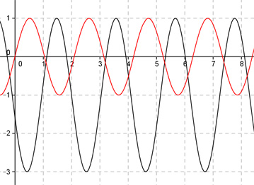

Aufgabe 254 Bestimmen Sie b und d für den dargestellten Graphen der Form y = a * sin (b * (x + c)) + d.  Abgelesen an y = -1 von (2 bis 8,28) 2п Periode = ----- 3 2п |b| = ---- = 3 2п ---- 3 Verschiebung von Punkt (0|0) in (2|-1) --> Abgelesen: Verschiebung entlang der y-Achse um -1 --> d = -1 --> y = asin (b(x + c)) - 1 Abgelesen: Verschiebung entlang y = -1 um 2 nach rechts --> c = -2 --> y = asin (b(x - 2)) - 1 Abgelesen: |a| = 2 Spiegelung an y = -1 --> a oder b negativ a = -2 und b = 3 y = -2sin(3(x - 2)) - 1 oder Wegen -sin(x) = sin(-x) gilt auch: a = 2 und b = -3 y = 2sin(-3(x - 2)) - 1 Zum Vergleich: sin(3x)